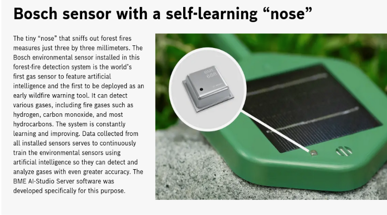
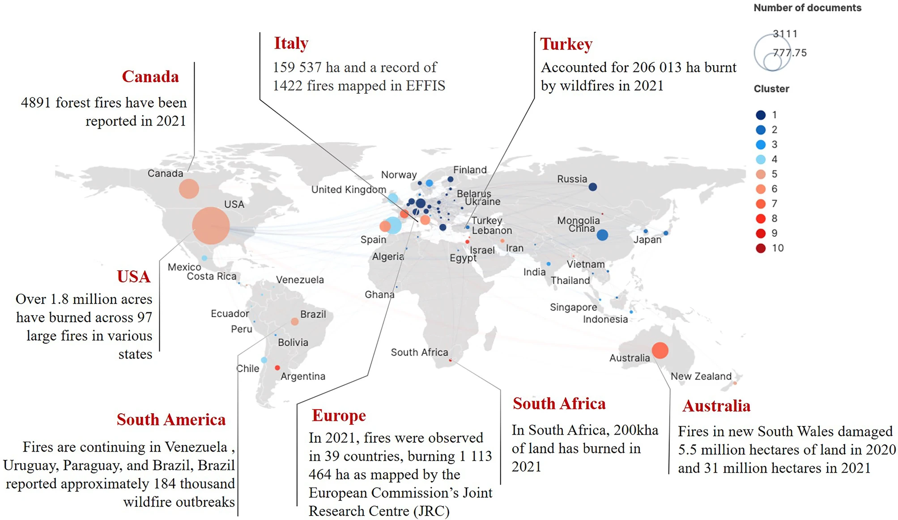

Forest Fires are a growing risk across the globe due to rising temperatures from climate change. According to NASA, In the Last 21 years Extreme wildfire activity has more than doubled worldwide.
| Existing Solutions | |
|---|---|
| Company | Implementation (quotes from articles) |
| ARNOWA | ARNOWA’s forest management solution makes use of various smart sensors and integrates their reading with an image and video analytics platform to build models. |
| WWFGuinas | Uses an online dashboard where users can see where deforestation and degradation has been detected in the past month and where deforestation is predicted in the next 6 months (see also Box 1). In addition to displaying alerts, the dashboard also offers additional features, such as loading contextual data layers and photos, and tracking field surveys and interventions. |
| Bosch | A small sensor from Bosch is now here to help keep those flames in check. It sniffs out even trace amounts of fire gases and sounds the alarm before the fire can spread. This buys firefighters valuable time so they can respond that much sooner to put out the blaze. |

According to a study done by the Heilongjiang Laboratory of Geographical Environment Monitoring on the factors affecting forest fires in China.
As temperatures rose, dry periods became longer, and air humidity decreased to lead to longer fire seasons.
The frequency and intensity of forest fires and the proportion of burned area increased.
Based on the regression analysis of meteorological data, temperature and precipitation had significant effects on forest fires.
From my research I gathered that the light intensity, air humidity, precipitation and temperature play a significant role in increasing the risk of wildfire.
So I will use a temperature, light intensity and soil moisture sensor to accurately predict the risk of fire.
Many of the current systems in place are more focused on detection rather than intervention. So I wanted my system to detect wildfires, but also actively work to stop them.
These two ideas combined into using a Smart Greenhouse Kit from Elecfreaks, and buying all the sensors I need.
I will model the effects of Soil Moisture, Temperature, Air Humidity and Light Intensity with respect to Wildfire Risk as the research I have seen correlates these factors with higher or lower risks
